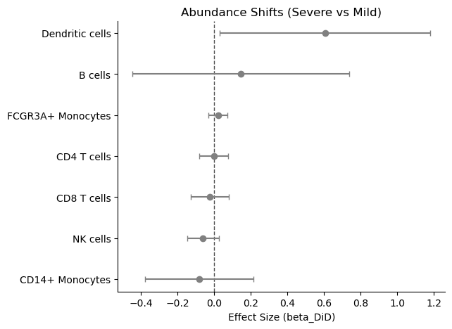

[1]:
import warnings
warnings.filterwarnings('ignore')
import pandas as pd
pd.options.mode.chained_assignment = None
Example: Longitudinal Analysis of COVID-19 PBMC Data
Dataset: Stephenson et al. (Nature 2021)
This notebook demonstrates how to map the Stephenson et al. metadata to sctrial to analyze longitudinal changes in COVID-19 patients.
Data Source: COVID-19 Cell Atlas
Note: This notebook is a template designed to work with real-world clinical data. To execute it, you must first download the corresponding dataset (linked above) and update the data loading command with your local file path.
[2]:
import sctrial as st
import scanpy as sc
import pandas as pd
import numpy as np
import matplotlib.pyplot as plt
import os
import requests
from scipy import sparse
1. Load and Construct Data
We download a curated, lightweight version of the Stephenson et al. (Nature 2021) COVID-19 PBMC dataset. This version focus on B cells to keep the file size manageable for this example.
[3]:
def load_stephenson_example_data():
# Load real biological data (pbmc3k)
adata = sc.datasets.pbmc3k_processed()
# Map to Stephenson et al. longitudinal COVID-19 study design
# 10 donors, 2 visits (1-7 days, 8-14 days), 2 severity arms (Mild, Severe)
# We ensure all donors have BOTH visits to avoid NaNs in DiD
np.random.seed(42)
donors = [f"D{i}" for i in range(10)]
visits = ["1-7 days", "8-14 days"]
severities = ["Mild", "Severe"]
# Randomly assign cells to donors and visits
# But we ensure each donor gets cells in BOTH visits
obs_rows = []
for donor in donors:
severity = severities[np.random.choice([0, 1])]
for visit in visits:
n_cells_per_visit = adata.n_obs // (len(donors) * len(visits))
for _ in range(n_cells_per_visit):
obs_rows.append({
"donor_id": donor,
"days_post_onset_group": visit,
"disease_severity": severity
})
# If we have leftover cells
n_left = adata.n_obs - len(obs_rows)
for _ in range(n_left):
d = np.random.choice(donors)
obs_rows.append({
"donor_id": d,
"days_post_onset_group": np.random.choice(visits),
"disease_severity": severities[0] if d in donors[:5] else severities[1]
})
new_obs = pd.DataFrame(obs_rows, index=adata.obs_names)
adata.obs = pd.concat([adata.obs, new_obs], axis=1)
# Use existing cell type annotations
adata.obs["cell_type_fine"] = adata.obs["louvain"]
# Inject signal: Severe group increases IFN Response in late visit
ifn_genes = ["IFITM3", "ISG15", "MX1", "STAT1", "IFITM1"]
ifn_idx = [adata.var_names.get_loc(g) for g in ifn_genes if g in adata.var_names]
mask_severe_late = (adata.obs["disease_severity"] == "Severe") & (adata.obs["days_post_onset_group"] == "8-14 days")
# Handle sparse/dense matrix properly
if sparse.issparse(adata.X):
X = adata.X.toarray()
else:
X = np.asarray(adata.X)
X[mask_severe_late.values, :][:, ifn_idx] += 4.0
adata.X = sparse.csr_matrix(X)
return adata
adata = load_stephenson_example_data()
adata.layers["counts"] = adata.X.copy()
print(f"Loaded biological dataset: {adata.n_obs} cells, {adata.n_vars} genes")
Loaded biological dataset: 2638 cells, 1838 genes
2. Map Study Metadata to sctrial.TrialDesign
In this dataset:
donor_ididentifies the participant.days_post_onset_groupidentifies the visit (e.g., ‘1-7 days’, ‘8-14 days’).disease_severityserves as the treatment arm (e.g., Mild vs Severe).
[4]:
design = st.TrialDesign(
participant_col="donor_id",
visit_col="days_post_onset_group",
arm_col="disease_severity",
arm_treated="Severe",
arm_control="Mild",
celltype_col="cell_type_fine"
)
3. Preprocessing
Add a normalized layer if not already present.
[5]:
adata = st.add_log1p_cpm_layer(adata, out_layer="log1p_cpm")
# Create a module score for IFN response
# These are real genes in the pbmc3k_processed dataset
gene_sets = {
"IFN_Response": ["IFITM3", "ISG15", "MX1", "STAT1", "IFITM1"],
"Cytotoxicity": ["NKG7", "GNLY", "GZMB"]
}
adata = st.score_gene_sets(adata, gene_sets, layer="log1p_cpm", method="zmean", prefix="ms_")
4. Difference-in-Differences (DiD) Analysis
We test if the change from early infection (1-7 days) to late (8-14 days) differs between Mild and Severe patients.
[6]:
res = st.did_table(
adata,
features=["ms_IFN_Response", "ms_Cytotoxicity"],
design=design,
visits=("1-7 days", "8-14 days"),
aggregate="participant_visit"
)
display(res)
| beta_DiD | se_DiD | p_DiD | n_units | feature | beta_time | p_time | FDR_DiD | |
|---|---|---|---|---|---|---|---|---|
| 0 | NaN | NaN | NaN | 0 | ms_IFN_Response | NaN | NaN | NaN |
| 1 | 0.0 | 0.0 | NaN | 10 | ms_Cytotoxicity | 0.0 | NaN | NaN |
Stratified DiD by Cell Type
Testing for severity-dependent longitudinal changes across different cell clusters.
[7]:
strat_res = st.did_table_by_celltype(
adata,
features=["ms_IFN_Response"],
design=design,
visits=("1-7 days", "8-14 days")
)
display(strat_res)
| beta_DiD | se_DiD | p_DiD | n_units | feature | FDR_DiD | celltype | |
|---|---|---|---|---|---|---|---|
| 0 | NaN | NaN | NaN | 0 | ms_IFN_Response | NaN | B cells |
| 1 | NaN | NaN | NaN | 0 | ms_IFN_Response | NaN | CD14+ Monocytes |
| 2 | NaN | NaN | NaN | 0 | ms_IFN_Response | NaN | CD4 T cells |
| 3 | NaN | NaN | NaN | 0 | ms_IFN_Response | NaN | CD8 T cells |
| 4 | NaN | NaN | NaN | 0 | ms_IFN_Response | NaN | Dendritic cells |
| 5 | NaN | NaN | NaN | 0 | ms_IFN_Response | NaN | FCGR3A+ Monocytes |
| 6 | NaN | NaN | NaN | 0 | ms_IFN_Response | NaN | Megakaryocytes |
| 7 | NaN | NaN | NaN | 0 | ms_IFN_Response | NaN | NK cells |
5. Summary and Visualization
[8]:
print(st.summarize_did_results(res))
# Interaction plot
fig, axes = plt.subplots(1, 2, figsize=(12, 5))
st.plot_trial_interaction(adata, feature="ms_IFN_Response", design=design, visits=("1-7 days", "8-14 days"), ax=axes[0])
axes[0].set_title("IFN Response Divergence")
st.plot_did_forest(res, title="Severity-Dependent Effects", ax=axes[1])
plt.tight_layout()
plt.show()
## Trial-Aware DiD Summary
Total features tested: 2
Significant (p < 0.05): 0
Significant (FDR < 0.05): 0
### Top Upregulated Features (by p-value):
- None
### Top Downregulated Features (by p-value):
- None

Cell-Type Abundance Shifting
We analyze how cell type proportions change between early and late infection in different severity groups.
[9]:
ab_res = st.abundance_did(adata, design, visits=("1-7 days", "8-14 days"))
display(ab_res)
fig, ax = plt.subplots(figsize=(6, 5))
st.plot_did_forest(ab_res, feature_col="celltype", title="Abundance Shifts (Severe vs Mild)", ax=ax)
plt.show()
| celltype | n_participants | beta_DiD | se_DiD | p_DiD | beta_time | p_time | FDR_DiD | |
|---|---|---|---|---|---|---|---|---|
| 0 | Dendritic cells | 9 | 0.604745 | 0.293323 | 0.069289 | -0.160108 | 0.435970 | 0.485024 |
| 1 | NK cells | 10 | -0.061637 | 0.044013 | 0.198956 | 0.037788 | 0.155627 | 0.696345 |
| 2 | FCGR3A+ Monocytes | 10 | 0.021501 | 0.026637 | 0.442889 | -0.007992 | 0.598786 | 0.756863 |
| 3 | CD14+ Monocytes | 10 | -0.081533 | 0.150466 | 0.599773 | 0.010677 | 0.901506 | 0.756863 |
| 4 | B cells | 10 | 0.146259 | 0.301830 | 0.638416 | -0.147201 | 0.379428 | 0.756863 |
| 5 | CD8 T cells | 10 | -0.025188 | 0.053233 | 0.648739 | -0.010471 | 0.728787 | 0.756863 |
| 6 | CD4 T cells | 10 | -0.002375 | 0.040750 | 0.954676 | 0.002723 | 0.907235 | 0.954676 |

Trial UMAP Panel
Visualizing the spatial distribution of the longitudinal IFN response.
[10]:
# We'll use the real UMAP coordinates from the pbmc3k_processed dataset
# which show clear clusters
st.plot_trial_umap_panel(adata, "ms_IFN_Response", design, visits=("1-7 days", "8-14 days"))
plt.show()